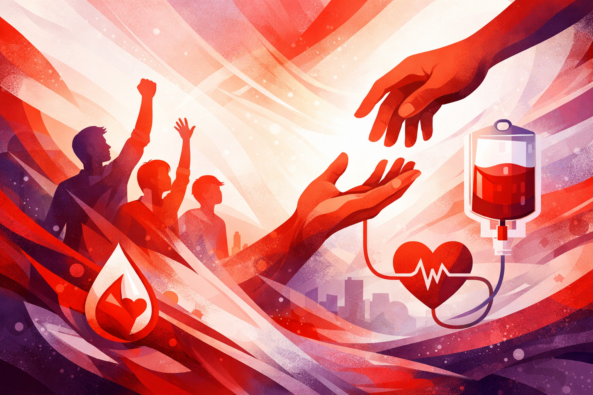

Live focus
Blood response, telemedicine, health outreach, relief.Blood donor matching & social good
Modern
emergency
care for BD.
Bloodman is a youth-led non-profit platform that helps families find blood support faster while extending that same network into telemedicine, health camps, relief, and community action.
24/7
Always-on coordination for urgent cases
Since 2014
A decade of volunteer-led service

Blood donation responses
Telemedicine consultations
Health camp participants
Relief-supported families
What Bloodman does
A sharper, faster,
broader public service platform.
Blood donation remains the center of gravity, but the organization now operates like a coordinated community care system rather than a single-purpose campaign.
01
Emergency blood donor matching
Hotline-led support for urgent blood requests, with volunteer coordination and fast donor outreach when time matters most.
02
Telemedicine access
Digital support pathways that help people reach care and guidance without waiting for a physical camp or event day.
03
Health camps
Community-facing activations for preventive care, awareness, screening, and neighborhood trust building.
04
Training & youth leadership
Volunteers gain discipline, service habits, and field experience that make the network more reliable over time.

Signature public presence
Bloodman built visibility around service, not just crisis response.
World Bloodman Day celebrations, social campaigns, recognition programs, and public events turn a behind-the-scenes support system into something communities can trust, join, and sustain.
See impact programsPlatform design principles
Less clutter, more signal.
This version keeps the real Bloodman identity, removes heavy old-page chrome, and makes the core journeys obvious on any screen.
Fast
Static HTML, CSS, and lightweight JavaScript keep page load fast and predictable across all network conditions.
Responsive
The layout is built for phones first, with a clear mobile menu and touch-friendly sections for every screen size.
Modern
Motion is handled with reveal transitions and animated counters instead of heavy sliders and embedded widgets.
Need help now?